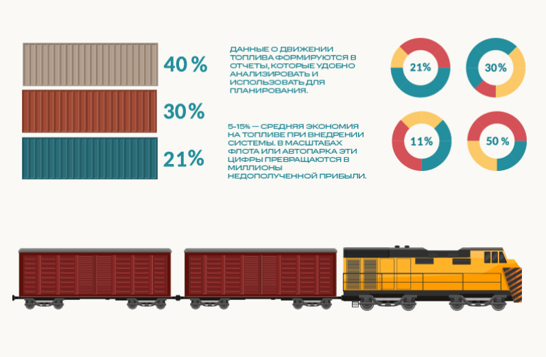
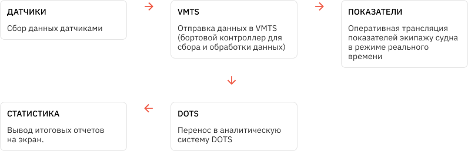
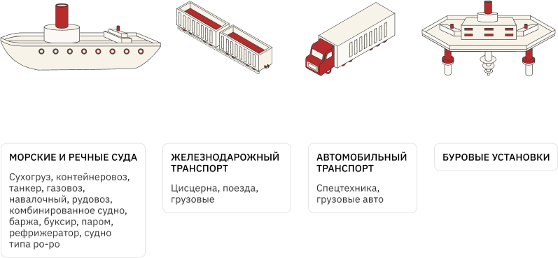

Система контроля расхода топлива для транспорта
Контролируйте операции с топливом с помощью системы контроля компании «Технодар».
Отслеживайте:
Данные о движении топлива формируются в отчеты, которые удобно анализировать и использовать для планирования.
Система успешно применяется на:
5-15% — средняя экономия на топливе при внедрении системы. В масштабах флота или автопарка эти цифры превращаются в миллионы недополученной прибыли.
Какие проблемы с топливом существуют?
Мошенничество:
Эксплуатация:
Разрозненность статистики:
Как система контроля решает эти проблемы?
Как работает система расхода топлива?
Могут ли сотрудники вывести систему из строя?
Любой механизм можно сломать. Для предупреждения этой проблемы, датчики пломбируются, а резкое отклонение в данных фиксируется в системе. В совокупности с сигнализационной системой, а также системами видеонаблюдения вывести оборудование из строя незамеченным очень сложно.
Могут ли сотрудники вывести систему из строя?
Кому подойдет эта система?
Кто будет управлять?
Управляют системой ответственные сотрудники вашей компании. Количество учетных записей не ограничено. Открывайте систему DOTS в смартфоне, ноутбуке или планшете — следите за процессами с любого устройства с доступом в Интернет или к корпоративной сети.
Что вы получите на выходе?
Взаимосвязанную систему, которая поможет:
В нее войдет комплекс датчиков, система VMTS, программное обеспечение DOTS и сигнализация, которая информирует о проблемах. В результате вы будете знать о полном цикле движения топлива, быстро реагировать на изменения и увеличите прибыль компании.
Наши кейсы
3-6 месяцев — столько времени вам понадобится, чтобы полностью окупить систему контроля бункеровки.
Сократить расходы на топливо можно уже сейчас с помощью рассрочки от компании «Технодар».